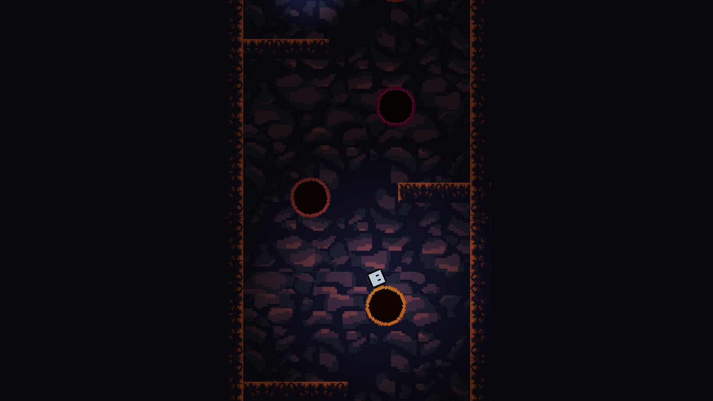
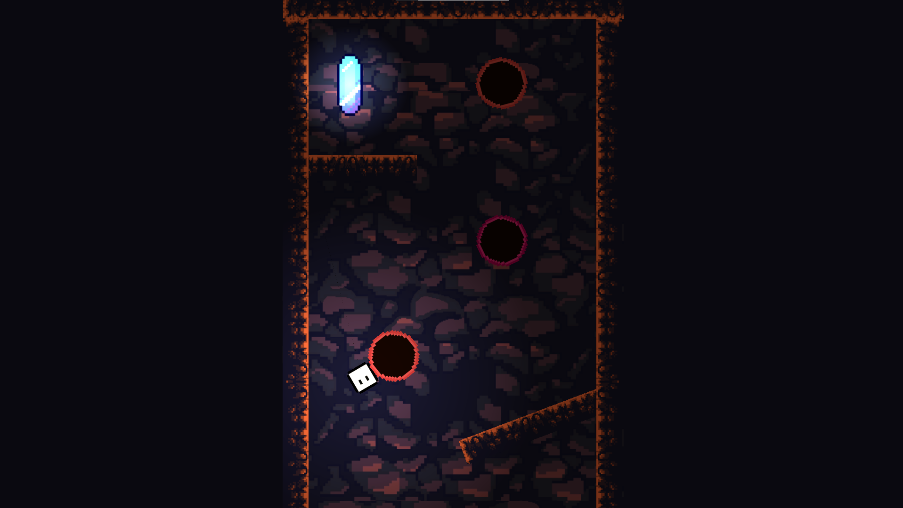
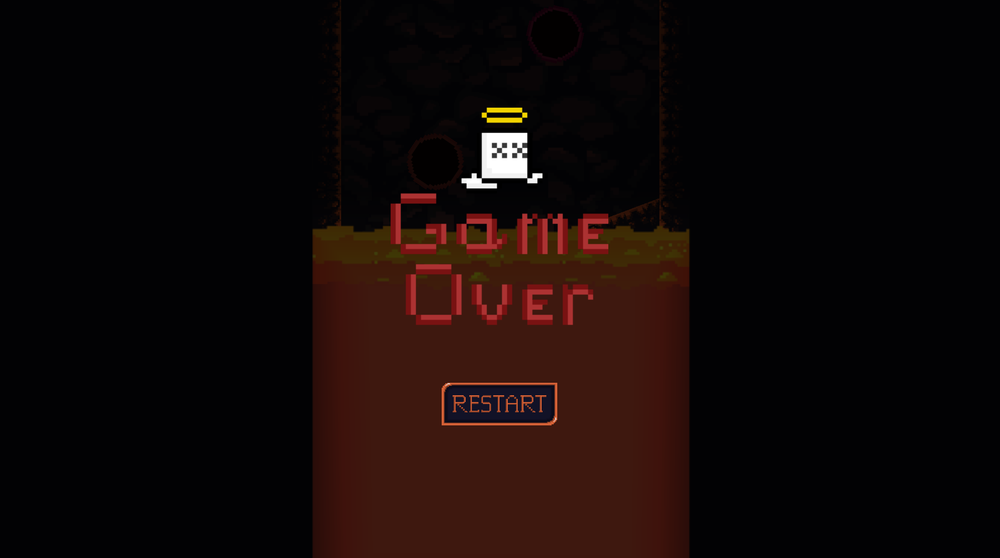

Son Nguyen, Paulo DaCosta
Orbit
Itch.IO Trello GitHubOne of my favorite games, Orbits. Inspired by Doodle Jump and vertical scroller games, and also from the meme "The floor is lava", me and my teammate decided to combine gravity and the spinning wheel into one, then we have Orbits. A casual game that targets the mobile market. This game was made on Unity and under 56 hours. Orbit isn't all about jumping, the player may need prediction skills to calculate the landing point and also the speed of the spinning orbit. Open up and play, if you can beat all 3 levels, I appreciate your skill and effort.
- My Contributions:
  